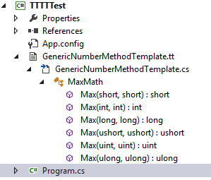

Can anyone tell me if there is a way with generics to limit a generic type
argument T to only:
Int16Int32Int64UInt16UInt32UInt64
I'm aware of the where keyword, but can't find an interface for only
these types,
Something like:
static bool IntegerFunction<T>(T value) where T : INumeric
Answer
This constraint exists in .Net 7.
Check out this .NET Blog post and the actual documentation.
Starting in .NET 7, you can make use of interfaces such as INumber and
IFloatingPoint to create programs such as:
using System.Numerics;
Console.WriteLine(Sum(1, 2, 3, 4, 5));
Console.WriteLine(Sum(10.541, 2.645));
Console.WriteLine(Sum(1.55f, 5, 9.41f, 7));
static T Sum<T>(params T[] numbers) where T : INumber<T>
{
T result = T.Zero;
foreach (T item in numbers)
{
result += item;
}
return result;
}
INumber is in the System.Numerics namespace.
There are also interfaces such as IAdditionOperators and
IComparisonOperators so you can make use of specific operators generically.
Suggest
Considering the popularity of this question and the interest behind such a
function I am surprised to see that there is no answer involving T4 yet.
In this sample code I will demonstrate a very simple example of how you can
use the powerful templating engine to do what the compiler pretty much does
behind the scenes with generics.
Instead of going through hoops and sacrificing compile-time certainty you can
simply generate the function you want for every type you like and use that
accordingly (at compile time!).
In order to do this:
- Create a new Text Template file called GenericNumberMethodTemplate.tt.
- Remove the auto-generated code (you'll keep most of it, but some isn't needed).
-
Add the following snippet:
<#@ template language="C#" #>
<#@ output extension=".cs" #>
<#@ assembly name="System.Core" #>
<# Type[] types = new[] {
typeof(Int16), typeof(Int32), typeof(Int64),
typeof(UInt16), typeof(UInt32), typeof(UInt64)
};
>
using System;
public static class MaxMath {
<# foreach (var type in types) {
#>
public static <#= type.Name #> Max (<#= type.Name #> val1, <#= type.Name #> val2) {
return val1 > val2 ? val1 : val2;
}
<#
} #>
}
That's it. You're done now.
Saving this file will automatically compile it to this source file:
using System;
public static class MaxMath {
public static Int16 Max (Int16 val1, Int16 val2) {
return val1 > val2 ? val1 : val2;
}
public static Int32 Max (Int32 val1, Int32 val2) {
return val1 > val2 ? val1 : val2;
}
public static Int64 Max (Int64 val1, Int64 val2) {
return val1 > val2 ? val1 : val2;
}
public static UInt16 Max (UInt16 val1, UInt16 val2) {
return val1 > val2 ? val1 : val2;
}
public static UInt32 Max (UInt32 val1, UInt32 val2) {
return val1 > val2 ? val1 : val2;
}
public static UInt64 Max (UInt64 val1, UInt64 val2) {
return val1 > val2 ? val1 : val2;
}
}
In your main method you can verify that you have compile-time certainty:
namespace TTTTTest
{
class Program
{
static void Main(string[] args)
{
long val1 = 5L;
long val2 = 10L;
Console.WriteLine(MaxMath.Max(val1, val2));
Console.Read();
}
}
}

I'll get ahead of one remark: no, this is not a violation of the DRY
principle. The DRY principle is there to prevent people from duplicating code
in multiple places that would cause the application to become hard to
maintain.
This is not at all the case here: if you want a change then you can just
change the template (a single source for all your generation!) and it's done.
In order to use it with your own custom definitions, add a namespace
declaration (make sure it's the same one as the one where you'll define your
own implementation) to your generated code and mark the class as partial.
Afterwards, add these lines to your template file so it will be included in
the eventual compilation:
<#@ import namespace="TheNameSpaceYouWillUse" #>
<#@ assembly name="$(TargetPath)" #>
Let's be honest: This is pretty cool.
Disclaimer: this sample has been heavily influenced by Metaprogramming in .NET
by Kevin Hazzard and Jason Bock, Manning Publications.